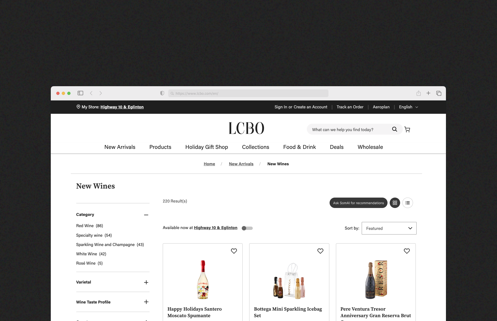
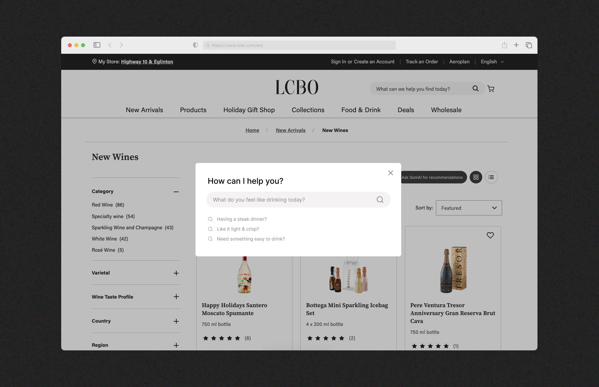
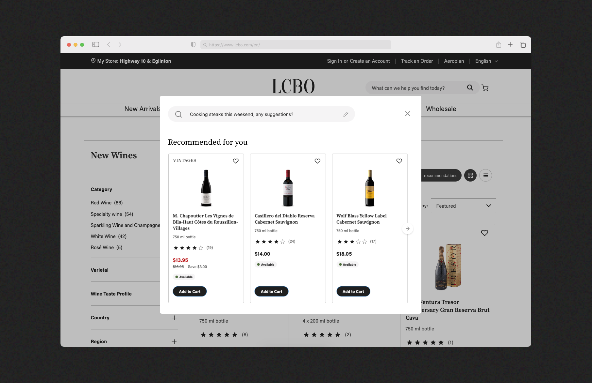

SomAI: Using AI to bring a sommelier experience to LCBO's online wine shopping.
CASE STUDY · 5 MIN READ

ROLE
Product Designer
TIMELINE
May 2026
TOOLS
Figma, Figma Make, Claude
SKILLS
AI Integration
UX Design
Product Thinking
OVERVIEW
Helping LCBO shoppers pick a wine without knowing anything about wine.
LCBO's catalog gives you filters. SomAI gives you a sommelier. Instead of rebuilding the platform, I explored how AI could quietly reduce decision fatigue at the exact moment shoppers feel stuck.
PROBLEM
220 wines and no guidance for the person who just wants something for dinner.
LCBO's existing filters — varietal, region, price — assume shoppers already know what they're looking for. Most don't. They know they're having pasta. They know they want something easy to drink. That's not a filter, that's a conversation.
The current experience puts all the cognitive load on the user. SomAI was designed to take it back.
APPROACH
AI as a layer, not a replacement.
The goal wasn't to rebuild LCBO. It was to find where uncertainty is highest and place something useful there.
The challenge wasn’t building AI for the sake of AI, it was figuring out where it could genuinely reduce friction without disrupting the shopping flow. SomAI was intentionally designed to work within LCBO’s existing ecosystem.
INTERACTION
One question. No wine knowledge required.
Instead of filtering, shoppers describe what they need in plain language.
The interaction was intentionally designed as a single-turn experience — one input, one curated result set. No back and forth. No follow-up prompts. Fast and clear.

RESULTS
Curated picks, not another list to scroll through.
After submitting a query, SomAI returns a focused set of recommendations. Cards show what matters — bottle, name, price, availability, and an Add to Cart action. Nothing else.
Tasting notes were considered and cut. Describing a wine as having "bright acidity and dark cherry notes" means nothing to the person who just wants something for steak night. The recommendation itself carries the confidence, the card doesn't need to justify it.

DETAIL
Adding to cart without losing your place.
A common shopping pattern is picking up more than one bottle. Closing the modal after every add would break that flow entirely.
Instead, clicking Add to Cart triggers a lightweight toast notification — "[Wine] added to your cart" — while keeping the recommendation session open. The shopper stays in context, can add another bottle, or type a new query entirely.
NEXT STEPS
Where SomAI goes from here?
If taken further, the most valuable additions would be purchase history learning so recommendations improve over time, seasonal and occasion-based suggestions, and a real LCBO catalog integration replacing the concept dataset.
REFLECTION
What I learned
Designing AI inside an existing product is different from designing an AI product.
The feature had to feel like it belonged to LCBO, not bolted on. Matching an existing visual system and fitting into an existing flow made the problem harder — and the result more believable.
The interaction model matters as much as the AI itself.
Single-turn was a deliberate choice. A chat interface would have felt powerful but slow. The right model for this moment wasn't the most technically impressive one — it was the most natural one.